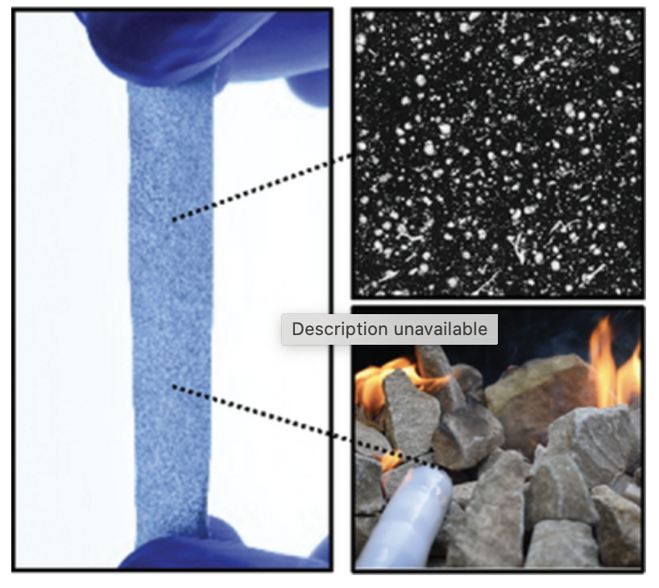

Project Viton: Thermo-Mechanically Stable, Liquid Metal Embedded Soft Materials for High-Temperature Applications
|
 |
|
|
| Liquid-metal embedded elastomers (LMEEs) have been demonstrated to show a variety of excellent properties, including high toughness, dielectric constant, and thermal conductivity, with applications across soft electronics and robotics. However, within this scope of use cases, operation in extreme environments – such as high-temperature conditions – may lead to material degradation. While prior works highlight the functionality of LMEEs, there is limited insight on the thermal stability of these soft materials and how the effects of liquid metal (LM) inclusions depend on temperature. Here, the effects on thermal stability, including mechanical and electrical properties, of LMEEs are introduced. Effects are characterized for both fluoroelastomer and other elastomer-based composites at temperature exposures up to 325 °C, where it is shown that embedding LM can offer improvements in thermo-mechanical stability. Compared to elastomer like silicone rubber that has been previously used for LMEEs, a fluoroelastomer matrix offers a higher dielectric constant and significant improvement in thermo-mechanical stability without sacrificing room temperature properties, such as thermal conductivity and modulus. Fluoroelastomer-LM composites offer a promising soft, multi-functional material for high-temperature applications, which is demonstrated here with a printed, soft heat sink and an endoscopic sensor capable of wireless sensing of high temperatures. |
Citation
- Thermo-Mechanically Stable, Liquid Metal Embedded Soft Materials for High-Temperature Applications, Robert Herbert, Piotr Mocny, Yuqi Zhao, Ting-Chih Lin, Junbo Zhang, Michael Vinciguerra, Sunny Surprenant, Wui Yarn Daphne Chan, Swarun Kumar, Michael R. Bockstaller, Krzysztof Matyjaszewski, Carmel Majidi, Advanced Functional Materials 2024 [PAPER]